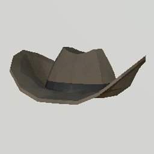
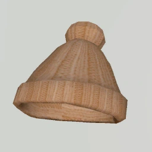
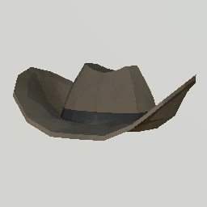
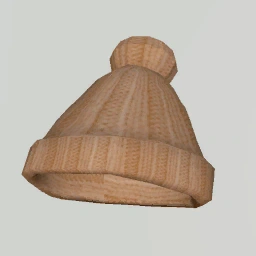

About
Gorilla Tag VR is a virtual reality game where players take on the role of gorillas in a fast-paced multiplayer environment.
The game typically involves players navigating through various virtual environments using their hands and body movements, mimicking the movements of a gorilla.
Players can swing from obstacles, climb walls, and chase or evade other players in a game of tag.
Customize Your Gorilla
There are a plethora of customization options available in Gorilla Tag, including backwear, shirts, hats, facial accessories, and more.
These items can be bought in the shop area with shiny rocks, the in-game currency of Gorilla Tag.
Shiny rocks can be obtained with real money or by logging in daily.
Here are a few examples of items to customize your gorilla:
 





Banana Hat Cowboy Hat Frostburn Sweater Pompom Hat Heart Headband Knight Armor
Where Can I Play?
Gorilla Tag is free to play! The game is available on the Oculus Quest headset, so having a PC is not necessary.
However it can still be played via PC VR, using headsets such as the Oculus Rift, Valve Index, and others.